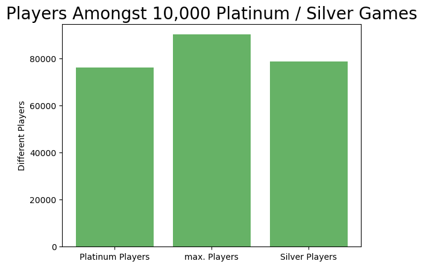

Player Duplicates
This analysis was an intermediate step to improve efficiency on the download and running the analysis of the other graphs. When downloading player data I obviously came across duplicates of players since I downloaded 100 games per player. But there were also other players who appeared more than once, maybe because some of the players played in parties or just as a coincidence. In this step I filtered these duplicates out so that I wouldn't download their data more than once to save time and resources of my own PC and the API. The results of how many players this affected can be seen in the graph.
